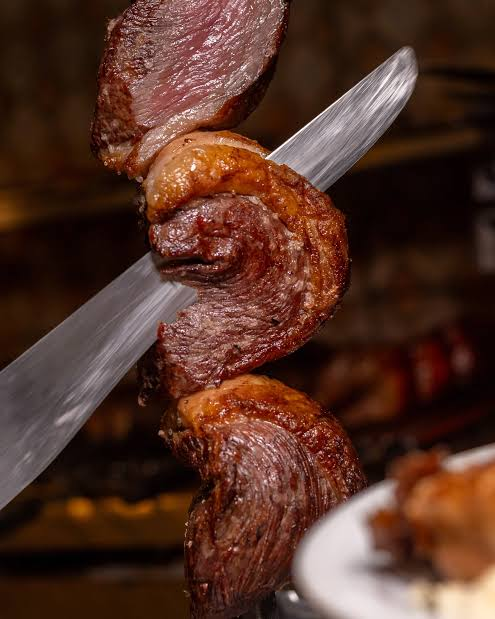
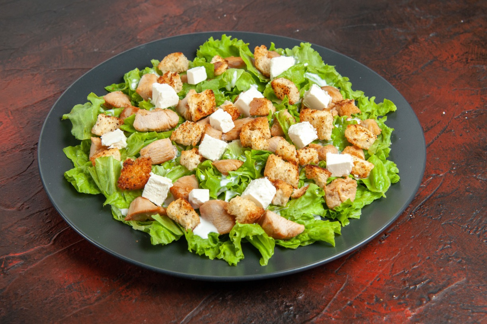

Bem-vindo à nossa casa!
Aqui você encontra aquele churrasco suculento, defumado no ponto certo e preparado por quem entende do assunto. Venha reunir a família e os amigos para saborear as melhores carnes nobres no nosso rodízio, direto na mesa, acompanhadas de uma cerveja bem gelada.
Navegue pelo nosso cardápio e descubra os cortes especiais que preparamos para o seu dia ser muito mais saboroso.
Nossa Tradição no Fogo
Fundado por apaixonados pela arte de assar carne, o Cantinho do Churrasco nasceu com o propósito de entregar uma experiência gastronômica única. Utilizamos apenas carvão de alta qualidade e lenha frutada para dar aquele toque defumado inconfundível em cada peça.
O que você vai encontrar por aqui

Cortes nobres selecionados
Picanha, ancho, cupim e outros clássicos do rodízio, sempre no ponto.

Acompanhamentos artesanais
Maionese da casa, farofa de panko com bacon e saladas fresquinhas.

Otima variedade de bebidas
Aqui você encontra ótimas variedades de bebidas a sua escolha
Venha nos visitar
Estamos de portas abertas de terça a domingo para receber você e sua família.
Faça já a sua reserva online para garantir sua mesa sem filas!